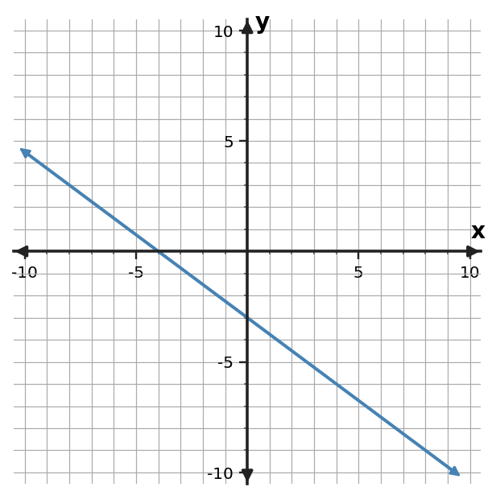

Algebra Check Your Understanding 2.3
1. Write a linear equation in slope-intercept form for the line through $(0,5)$ and $(3,-7)$.
2. Write an equation in slope-intercept form for the relationship in the table.
| $x$ | $y$ |
|---|---|
| $-2$ | $-2$ |
| $0$ | $-8$ |
| $2$ | $-14$ |
| $4$ | $-20$ |
3. Write an equation in slope-intercept form for the graphed line. Use graph features as evidence.

4. A tank starts with 19 liters and drains 6 liters each minute. Let $t$ be minutes and $V$ be volume. Write $V$ as a function of $t$. Identify the change and starting volume.
5. For $y=x$, explain the roles of $m$ and $b$. Then give one ordered pair that must lie on the line.
6. A linear relationship is represented by $y=3x+1$. Write a different equation that is equivalent to it after moving all terms to one side, and verify that $(6,19)$ satisfies both forms.